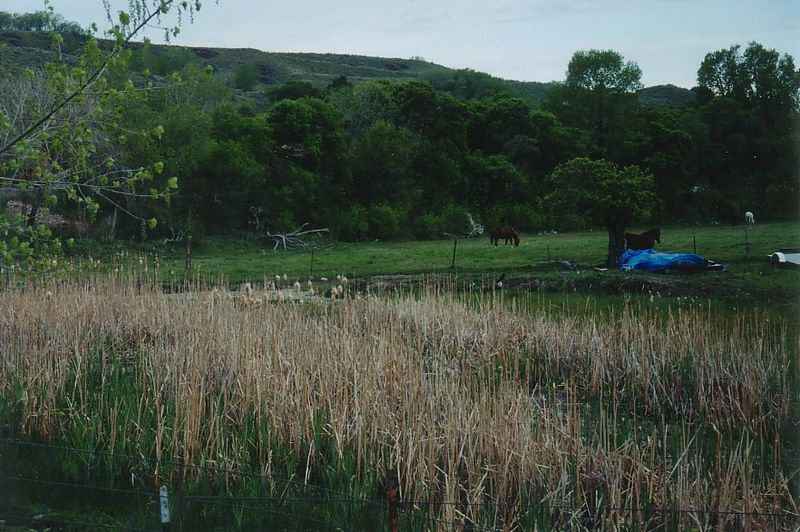
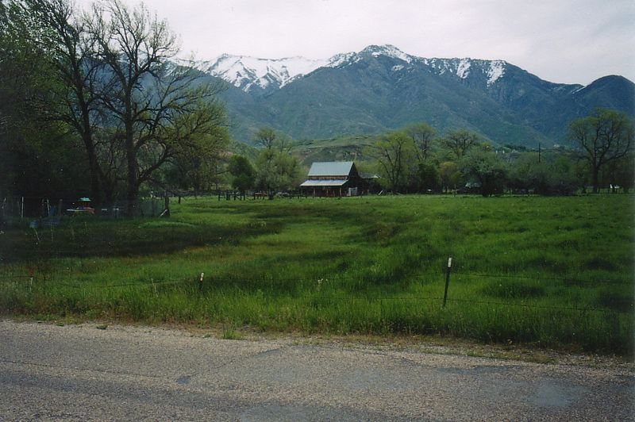
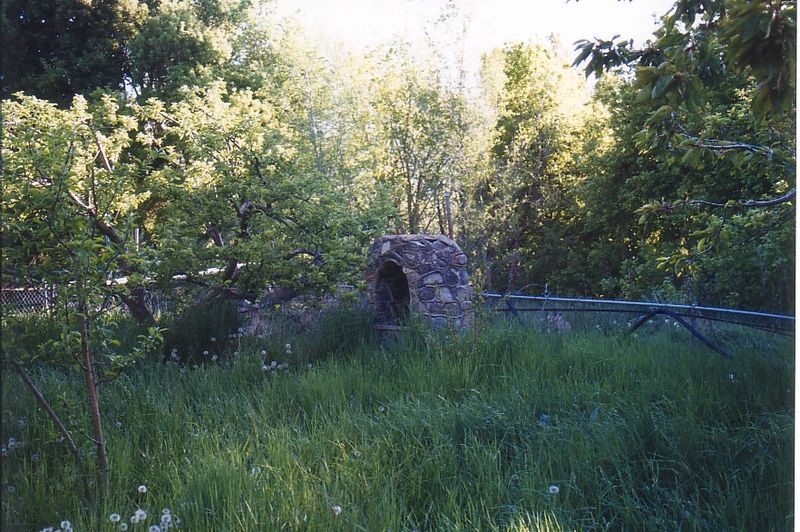
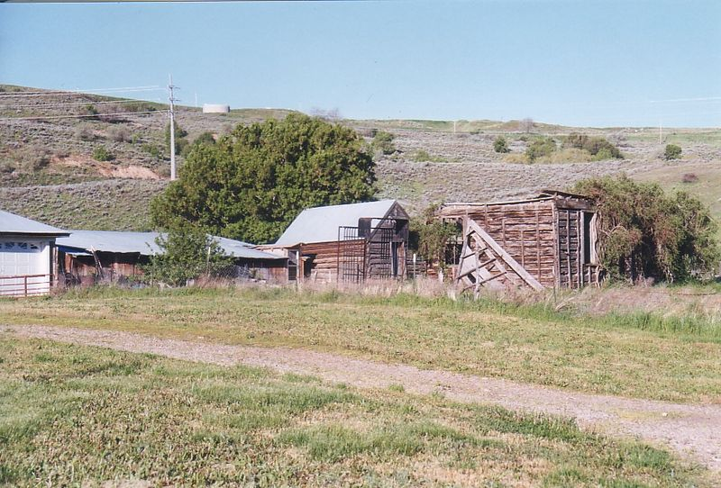
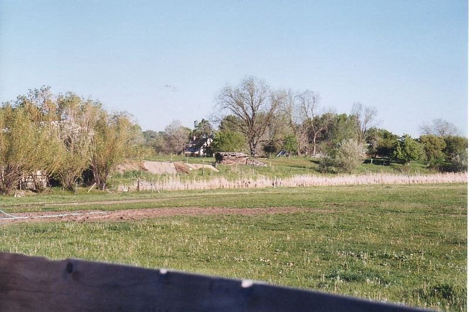

Morrisite.org › Places › Kington Fort
Kington Fort
South Weber, Utah. The fort at South Weber where Morris gathered his followers in 1861–62, and the siege of June 1862.

Built in 1853 and abandoned in 1858, then reoccupied by the Morrisites. Nothing of the fort survives; a monument to the Kington Fort–Morrisite War site, Sons of Utah Pioneers marker no. 128, was erected in August 2006 at 6600 South and 475 East (N 41.14677, W 111.96884), sponsored by the South Weber chapter of the Daughters of Utah Pioneers, the Ogden Pioneer chapter of the Sons of Utah Pioneers and All Build Construction and Landscaping, with the site designed by Douglas B. Stephens (Barlow, 2022). The fort was named for Bishop Thomas Kington, and “Kington” is the correct spelling. The monument itself notes that the earliest sources (the notebook kept by Kington’s wife, his gravestone, Wilford Woodruff’s journals, and early church records) all spell it that way; recent scholarship such as Holley (2008) follows them. Many nineteenth- and twentieth-century accounts, and some modern references, including the Utah History Encyclopedia and Wikipedia, write “Kingston Fort.” Insiders used both: Forscutt, who lived in the fort, wrote “Kingston’s Fort” and called it “the proper name” of the place (“Sketch of Joseph Morris,” CHL MS 702). Search under both spellings. Not all the people in the fort were from South Weber. Holley (2008) names eleven men from Slaterville and Marriott, about nine miles to the northwest, among the prisoners of June 1862, and two of the family groups on the roll, Cowan–Bull and Higham, were Slaterville families (see “Families on the roll” on the roll page). A log cabin nearby, which the local historian Ed Cooper, from oral accounts of older South Weber residents, identified as the building Morris used to hold the three departing members whose detention led to the siege, is shown in MO-IMG-046–049; it has been moved from its original site, and the identification rests on local tradition. About 200 yards south, on the west side of the road, in the South Weber Pioneer Cemetery, a marker reads “Joseph Werner, ‘Morrisite,’ about 1870” (MO-IMG-021). The name lingered locally. In the early 2000s, while the editor was going door to door in South Weber, a woman then in her sixties said that elementary-school classmates had called her “Morrisite” as a taunt because of where in South Weber she lived; she said her family had no Morrisite connection. (Editor’s memorandum of recollection, written November 1, 2026; the conversation was not recorded at the time.) A cannonball from the siege was kept by the family of Al Peek, together with a portrait of Mary Christoffersen Anderson (MO-IMG-051–053; the portrait is MO-IMG-062).
VisitThe monument is public. The Pioneer Cemetery appears to lie on private land but is reached by a public easement; stay on the access route. The cabin is on private property.
Places on the ground
The fort and the siege of June 13–15, 1862, as the sources place them. Nothing of the fort survives, and the ground is now streets, houses and fields. Solid markers are located; outlined markers are approximate (placed from a plan or a written description); the dashed square is the fort as G. Q. Jones drew it. Most of this is private land: the monument is the public place to visit. If you know where one of these places stood, please write.
Streets are drawn straight through the monument corner and are approximate. The fort’s outline follows the plan by G. Q. Jones (1996) and the editor’s 2009 overlay of it on an aerial photograph; it is good to perhaps a hundred feet.
- The Kington Fort–Morrisite War Site monument Located 2006 map
Sons of Utah Pioneers marker no. 128, at 6600 South and 475 East, erected in August 2006 by the South Weber chapter of the Daughters of Utah Pioneers, the Ogden Pioneer chapter of the Sons of Utah Pioneers and All Build Construction and Landscaping. It stands within the area of the old fort. Public.
Sources: Barlow (2022); see History. - Kington Fort Approximate 1853–1862
Built in 1853 by the settlers under Bishop Thomas Kington and abandoned in 1858; a square of about 645 feet with log and later adobe houses along an earth wall, gates on each side and a public square in the middle. The Morrisites reoccupied it in 1861, rebuilt the wall in adobe and built new houses. Jones’s plan places Morris’s tent and an adobe schoolhouse in the southwest part of the fort, and the intersection of today’s 6600 South and 475 East inside it.
Sources: G. Q. Jones, “Morrisite Fort – Plan, South Weber, Davis County, Utah,” December 1996 (not reproduced here); the monument text. - The bowery, west of the fort Approximate June 13, 1862 map
The open-air meeting place in a grove of trees west of the fort. On the morning of June 13, as Morris spoke to his people there, the posse’s cannon fire fell among them, killing two women and wounding Mary Christoffersen. The marker follows Jones’s plan.
Sources: Jones plan (1996); see History. - The west gate and the surrender Approximate June 15, 1862 map
Jones places near the west gate the scene on June 15, after the white flag was raised, in which Joseph Morris and two women were killed and John Banks was fatally wounded. Accounts of how it happened differ; see History and Questions.
Sources: Jones plan (1996). - The south gate and the slough Approximate June 15, 1862 map
Jones’s plan marks a slough just outside the south gate, where a road crossed it, and notes that on June 15 an armored battery made from the rear of a wagon was rolled toward the fort, caught a wheel in the mud and tipped over, and that its crew retreated under musket fire. Jones gives no source for this. Anderson describes a rolling battery of willows and wagon wheels pushed up to the fort wall the same day, so the accounts differ. See MO-IMG-032 under Images.
Sources: Jones plan (1996); Anderson, Revisited, p. 135. - The posse on the south bluffs Approximate June 13–15, 1862 map
The fort stood in a bowl on the Weber River flood plain, ringed on the south and west by sandy bluffs about half a mile off and some two hundred feet high. Burton’s posse took its position on the south bluffs on June 13 with its cannon, from which it could see into the fort. The marker stands for the bluff line, not a known gun position.
Sources: Anderson, Revisited, pp. 64, 112, 128. - The Ogden volunteers on the north bluff Not yet located June 1862
Volunteers from Ogden brought a cannon to the bluff north of the river. Its position has not been placed.
Sources: Anderson, Revisited, p. 128. - South Weber Pioneer Cemetery Approximate 1870 map
About 200 yards south of the monument, on the west side of the road. A marker reads “Joseph Werner, ‘Morrisite,’ about 1870” (MO-IMG-021). The cemetery appears to lie on private land but is reached by a public easement; stay on the access route.
Sources: The editor’s visits, before 2004. - The “Morrisite jail” cabin Not yet located 1862
The log cabin that the South Weber historian Ed Cooper identified, from local tradition, as the building Morris used to hold the three departing members in 1862 (MO-IMG-046–049). It has been moved from its original site, which is not known, and it stands on private property; its present location is not given here.
Sources: Ed Cooper, to the editor, before 2004.
In the chronology
- 11 Feb 1861The apostles John Taylor and Wilford Woodruff hold a meeting at South Weber to “regulate” the branch. On Taylor’s motion, seconded by Woodruff, sixteen of Morris’s followers are cut off from the church, among them Bishop Richard Cook, his brother John Cook, John Parson and Robert Farley (Woodruff’s journal, February 11, 1861). Morris’s name is not on the list Woodruff recorded.
- 6 Apr 1861Morris organizes the Church of the Firstborn and calls his followers to gather at Kington Fort, an abandoned 1853 settler fort at South Weber.
- 11 Jun 1862Acting Governor Frank Fuller orders General Daniel H. Wells to furnish the territorial marshal, Henry W. Lawrence, and his deputies, Robert T. Burton and Theodore McKean, “a sufficient military force” to act as a posse in serving Third District Court writs for the arrest of “Joseph Morris and others residing in the northern part of Davis County.” The order survives in a copy Wells made in 1871 (Utah Territorial Militia Records, series 2210, document 1,215, Utah State Archives; page image on FamilySearch).
- 13–15 Jun 1862A territorial posse under Robert T. Burton besieges the fort. Morris and John Banks are killed during the surrender; eleven people die in all, including two young posse members, Jared Smith (June 13) and Peter Wahler (June 15).
- 18–19 Jun 1862Before Judge Kinney in Salt Lake City, Richard Cook is fined and jailed for contempt, Peter Klemgaard and Christian Neilson are held in prison, and ninety-five other men are bound over on $1,500 bail each for the March 1863 term (Deseret News, June 25, 1862).
- Mar 1863In Salt Lake City, seven Morrisites are convicted of second-degree murder: Peter Klemgard is sentenced to fifteen years, Christian Neilsen to twelve, and Abraham Taylor, Kadrup Neilsen, Jens Christiansen, Andrew Lee and Andrew M. Mason to ten; John Parson and John E. Jones are acquitted. The other prisoners are fined $100 each for resisting arrest (Deseret News, April 1, 1863). The new territorial governor, Stephen S. Harding, pardons them all a few days later.
- 1860s–Some Morrisites return to the Church of Jesus Christ of Latter-day Saints, in Utah and elsewhere. The 2006 monument at South Weber notes that a few were rebaptized and remained there. Others find a home in the Reorganized Church (RLDS): the former Morrisite apostle Mark Hill Forscutt joins it in Salt Lake City in 1865, and John L. Bear (Johann Lebrecht Bär, 1838–1919), a Swiss convert from Affoltern am Albis who emigrated from Zürich in 1860 and lost his wife and child at Kington Fort, later serves as an RLDS missionary to Switzerland and Germany, dies in Independence, Missouri, and publishes his autobiography in the RLDS Journal of History. In 1865 RLDS missionaries at Malad, Idaho, baptize several people who appear on the roll. Others join only after years in the Morrisite groups: Erick and Caroline Eliason are baptized together at Soda Springs on June 9, 1870; Margaretta Cook leaves the Morrisites in Nevada in 1870 and is baptized RLDS in 1873; and Lena Hanson, at Soda Springs and then Deer Lodge, in 1895 (see the roll).
- 2006A monument to the Kington Fort–Morrisite War site is dedicated at South Weber.
Photographs (33)
MO-IMG-001 Kington Fort–Morrisite War Site monument, Sons of Utah Pioneers marker no. 128, MO-IMG-021 Grave marker of Joseph Werner, inscribed “‘Morrisite’ about 1870,” in the South
MO-IMG-021 Grave marker of Joseph Werner, inscribed “‘Morrisite’ about 1870,” in the South MO-IMG-022 Museum display on the Morrisite War: a newspaper clipping headlined “Morrisite
MO-IMG-022 Museum display on the Morrisite War: a newspaper clipping headlined “Morrisite  MO-IMG-028 The South Weber welcome sign at the edge of town. South Weber, Utah · before Fe
MO-IMG-028 The South Weber welcome sign at the edge of town. South Weber, Utah · before Fe MO-IMG-029 The road through South Weber, with the Wasatch Range behind. South Weber, Utah
MO-IMG-029 The road through South Weber, with the Wasatch Range behind. South Weber, Utah  MO-IMG-030 Pasture with a wooden gate frame at a South Weber crossroads. South Weber, Utah
MO-IMG-030 Pasture with a wooden gate frame at a South Weber crossroads. South Weber, Utah MO-IMG-031 Homes at a South Weber crossroads. South Weber, Utah · before February 2004 (sc
MO-IMG-031 Homes at a South Weber crossroads. South Weber, Utah · before February 2004 (sc
MO-IMG-032 The slough below the bluffs. Kington Fort stood on the Weber River flood plain,
MO-IMG-033 Pasture and barn by the slough, mountains beyond. In 1862 the river bottom was
MO-IMG-034 Small stone monument in a grove, labeled by the editor as the site of the South
MO-IMG-035 Old sheds and outbuildings in South Weber. South Weber, Utah · before February
MO-IMG-036 Field labeled by the editor as the site of the South Weber post office. South WRecords, documents and questions
- Documents The Spirit Prevails (1886)
- Documents Roll of Membership (1886)
- Documents Gems of Inspiration (1899)
- Documents Order calling out the posse, June 11, 1862
- Documents South Weber militia company, April 22, 1859
- Documents Weber District muster roll, October 1857
- Documents “Fatal Resistance to the Laws,” June 18, 1862
- Documents “The Davis County Bandits,” June 25, 1862
- Documents “Third District Territorial Court,” April 1, 1863
- Documents “Niels Anderson matter, 1903”
- Repositories Diaries, letters, and federal records
- Questions Where is Joseph Morris buried?
- Questions Who were the Morrisites?
- Questions Who died at Kington Fort?
- Questions Where are the records of the 1863 trials?
- Questions Did one posse member die, or two?
- Questions Who were the men held after the siege who are not on the roll?
- Questions Where did the Morrisite teaching of reincarnation come from?
- Questions What became of the spiritual gifts?
- Questions Where did the rituals come from?
- Questions How has the Morrisite War been remembered?
In the bibliography (12)
- Fuller, Frank, Acting Governor of Utah Territory. Order to Gen. Daniel H. Wells, June 11, 1862, calling out the militia as a posse to arrest Joseph Morris. Copy in a letter from Nauvoo Legion headquarters, January 14, 1871. Utah Territorial Militia Records, series 2210, document 1,215. Utah State Archives, Salt Lake City. FamilySearch image (free account).
- Holley, Val. “Slouching Towards Slaterville: Joseph Morris’s Wide Swath in Weber County.” Utah Historical Quarterly 76, no. 3 (Summer 2008): 247 ff. Names eleven Slaterville and Marriott men among the prisoners of June 1862. Issuu
- Rogers, Eric Paul. “The Morrisite War.” Presentation, South Weber, Utah, October 2017.
- Holley, Henry Orvil. “The History and Effect of Apostasy on a Small Mormon Community.” Master’s thesis, Brigham Young University, 1966. On Slaterville, Weber County, and the Morrisites. Online
- Bell, Lee D. South Weber: The Autobiography of One Utah Community. South Weber, UT: South Weber Town Council, 1990.
- Carr, Annie Call, ed. East of Antelope Island: History of the First Fifty Years of Davis County. Bountiful, UT: Daughters of Utah Pioneers, 1948. Includes South Weber.
- Hunter, Milton R., ed. Beneath Ben Lomond’s Peak: A History of Weber County, 1824–1900. Salt Lake City: Daughters of Utah Pioneers, Weber County Chapter, 1944; 5th ed. 1995.
- South Weber City. “The History of South Weber City.” With a collection of residents’ personal histories. Online
- Wheeler, Jerome. “History of Slaterville.” Unpublished manuscript, ca. 1963. Marriott-Slaterville City History Collection, MS 351, Special Collections, Stewart Library, Weber State University, Ogden, UT. Digital copy
- Barlow, Jacob. “The Kington Fort-Morrisite War Site.” Blog post, February 15, 2022. Photographs of the monument and of a cannonball in the Weber County museum of the Daughters of Utah Pioneers. Read
- Barlow, Jacob. “The Kington Fort–Morrisite War Site.” February 15, 2022. YouTube video, 2:35. Watch
- Homebilt Video. “Siege at South Weber.” August 14, 2026. YouTube video, 4:09. Watch
People
People on the 1861–62 roll whose notes or pages mention this place (35). Each name links to the name index.
Anderson, Niels page; Astel, Joseph page; Banks, John page; Beck, Niels R. page; Bowman, Agnes; Bowman, John; Bright, Benjamin; Brooks, Nathan; Brown, Alonzo; Christofferson, Maria; Cook, Ellen; Cook, Hannah; Cook, John page; Cook, Margaret; Cook, Mary; Cook, Richard page; Cook, Sarah; Davies, William page; Eliason, Erick page; Farley, Robert E. page; Firth, John; Geertsen, Lars Christian page; Higham, Charles page; Jacobson, Niels; Jones, William page; Jones, William J. page; Kendell, Johanna; Kendell, William; Klemgard, Peter C. page; Livingstone, R. J.; Morrison, Niels; Park, David Sr. page; Parson, John page; Smith, Hans Peter; Trolsen, John
Others named in the sources (14).
Morris, Joseph; Aggerson, Hans; Edwards, John C.; Halse, Samuel; Moffat, Peter; Neilsen, Kadrup; Parr, L.; Peterson, James; Rasmussen, Soren Peter; Reese, John E.; Sorenson, John Peter; Williamsen, S.; Bowman, Isabella; Bowman, James
This page gathers entries from across the guide by the place’s names, so a few may mention it only in passing. Corrections and additions: contact@morrisite.org.
Rogers, Eric Paul, ed. “Kington Fort.” Morrisite.org. https://morrisite.org/place/kington-fort.html. Add the date you consulted it.